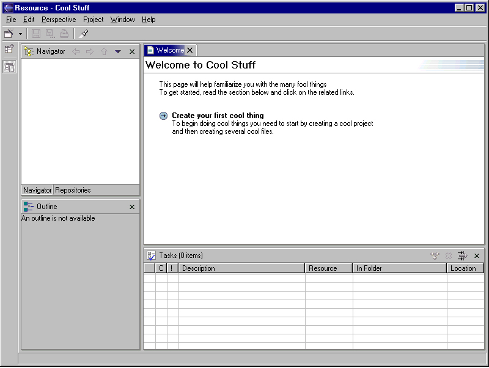

| Eclipse Corner Article |
Summary
In this document we will look at the steps needed to create a product. Before we get too excited hoping the magic of product building will be revealed, we should first confess that we will focus only on those aspects of the platform which you will need to modify in order to give your product some branding. This will include such items as the splash screen, about dialog, the program executable and so forth.By Greg Adams, OTI
November 27, 2001Editor's note: This article describes Eclipse release 1.0. All aspects of product branding were completely revamped for Eclipse release 2.0; an updated version of this article is in preparation.
You have written all the code and now it is time to bundle up your code with the platform and change the identity to have your product brand. Before diving into the details of each step let's take a sneak peak at the big picture and get a flavor for the kinds of things we'll be doing. The high level steps are as follows:
As you work through the steps you may notice the occasional  .
These indicate points at which you may want to test out the work you have done
thus far. Once you have completed the test be sure to delete the eclipse/workspace
directory thus ensuring that the next test starts with a fresh state. Once you
have mastered the steps you should do a final run through the steps (starting
with a clean install) but be sure to skip the "try it" steps. These
steps require you to run the platform and consequently will cause information
to be cached. Your actual product production process should not run the platform
runtime.
.
These indicate points at which you may want to test out the work you have done
thus far. Once you have completed the test be sure to delete the eclipse/workspace
directory thus ensuring that the next test starts with a fresh state. Once you
have mastered the steps you should do a final run through the steps (starting
with a clean install) but be sure to skip the "try it" steps. These
steps require you to run the platform and consequently will cause information
to be cached. Your actual product production process should not run the platform
runtime.
The steps in this document assume that you have the runtime build of the platform installed on your machine. In some cases you will require access to the SDK build but it is important to note that we will be working with and modifying the platform build. In the remaining sections we assume that you have a working knowledge of plug-ins.
Before continuing make sure that you have installed a platform runtime build and installed into it all of your own plug-ins. You should not consider branding/productization unless you are also including your own plug-ins.
This article is intended to be a guide to help you produce a release. You need to ensure that you comply with any terms and conditions of the license under which you received the platform runtime.
The splash screen (shown while the program starts) is contained in two files found in the eclipse/splash directory. You must replace both of these files with your product splash screens. The file splash_basic and splash_full correspond to low color and high color versions of the splash screen. The low color splash screen is used only when the display (color) depth is less than or equal to eight. Typically most displays have sufficient color depth support to allow the high color splash to be used.
On Windows® replace the following two files (in eclipse/splash) with your splash screen files:
On Linux replace the following two files (in eclipse/splash) with your splash screen files:
 Start the program and confirm
that your splash screen is shown. Exit the program. Don't forget to delete the
eclipse/workspace directory thus ensuring things are in a completely
fresh state for our next test.
Start the program and confirm
that your splash screen is shown. Exit the program. Don't forget to delete the
eclipse/workspace directory thus ensuring things are in a completely
fresh state for our next test.
The executable is located in the eclipse/ root directory and the process for replacing it is platform specific. Start by extracting the file eclipse/launchersrc.zip found in the SDK and opening the resulting library subdirectory. In the following sections, we will work with the library/ directory and once we are finished we will copy the resulting executable back to the runtime platform build. This is the only time you will require access to files found in the SDK.
On Windows executable programs can have an associated icon(s). To create our icon we first need to replace several .BMP graphics located in the library directory. These graphics represent 16x16, 32x32 and 48x48 pixel versions of both low color and high color graphics. In the library/ directory replace the following files:
Using an appropriate graphics tool (e.g. ICONPRO provided in the MSDN) of your choice, combine these graphics into a single .ICO (icon) file called eclipse.ico and replace library/eclipse.ico with your new eclipse.ico file. The eclipse.ico is referenced by the file library/eclipse.rc which is automatically used when the executable build script is run. Once the build script has finished we will have a new program executable with an associated icon.
Linux does not directly associate an icon with an executable program however we can include an icon that users can use when associating a shortcut with the program. Create yourself an xpm graphic (representing your program icon) using your favorite graphics editor and place it into library/icon.xpm. Once we have built the executable we will copy both the executable and the .xpm file to the eclipse/ root directory of the platform runtime build.
Executable icon in hand, it's time to make the executable. We will continue to work with the library/ directory and once we have created our executable we will copy it to the eclipse/ root directory of the runtime platform build. The process for creating the program executable is different for each platform however the library/ directory includes build scripts to help make the process easier.
In the library/ directory you will find the build script build.bat. We will need to edit this build file to point it to the location of your compiler. To do this, simply uncomment the following lines (by removing rem) and modify MSVC_HOME to point to the root directory of your compiler installation.
rem IF NOT "%MSVC_HOME%"=="" GOTO MAKE rem set MSVC_HOME=k:\dev\products\msvc60\vc98 rem call %MSVC_HOME%\bin\vcvars32.bat
This script has been tested with Microsoft® Visual C/C++ Compiler 6.0 however it is possible that you may need to make additional modifications for your compiler. If you are using Windows 98 you will also need to remove the line rem Usage: build <PROGRAM_OUTPUT> <PROGRAM_NAME> to work around a known problem.
On Linux, the build script (build.csh) has been tested against GNU C and C++ Compiler. You typically should not need to make any changes to the Linux build script.
The build script takes two arguments, the filename of the executable file to create and the title (name) of your program. If the program name has spaces in it (as in the example below) you will need to put double-quotes around it.
In the example below the program name Cool Stuff will be shown in the task bar while the program is starting. As we will soon learn the icon shown in the top left corner of each Workbench window is set separately and is unrelated to the icons specified for the executable.
On Windows you can run the build script (build.bat) as shown below. Prior to running the build script you should delete any .res files from the library directory. These files will typically only be present if you have run the build script previously. This example will create an executable file named cool.exe with the icon we created above.
build cool.exe "Cool Stuff"
On Linux you can run the build script (build.csh) as shown below. This example will create an executable file named cool. On Linux an icon is not automatically associated with the executable.
csh build.csh cool "Cool Stuff"
Now that you have your own executable, you can copy it to the eclipse/ root directory of the runtime platform build. Next, delete the current executable from the eclipse/ root directory. If you forget to delete the existing executable a user will not know which executable to run so its important not to forget this little step.
On Linux we also need to copy the icon.xpm (we created above) to the eclipse/ root replacing the one already found there.
 Let's give it a whirl!
Go to the eclipse/ root directory of the runtime platform build and start
the program by running your executable. Confirm that your executable properly
starts, that your icons and program name are shown in the appropriate places
and that your splash screen is still shown. Don't worry about the icon or title
in the resulting Workbench window we'll fix those in a later section. Exit the
program. Don't forget to delete the eclipse/workspace directory thus
ensuring things are in a completely fresh state for our next test.
Let's give it a whirl!
Go to the eclipse/ root directory of the runtime platform build and start
the program by running your executable. Confirm that your executable properly
starts, that your icons and program name are shown in the appropriate places
and that your splash screen is still shown. Don't worry about the icon or title
in the resulting Workbench window we'll fix those in a later section. Exit the
program. Don't forget to delete the eclipse/workspace directory thus
ensuring things are in a completely fresh state for our next test.
A product configuration and its corresponding plug-in define several key product attributes including the icon and title shown in each window, the welcome page, about dialog information and much more. Product configurations are defined in the eclipse/install/configurations directory. If you take a glance at this directory you will likely observe more than one product configuration. Which one defines the product? The answer lies in the file eclipse/install/install.properties that specifies which configuration is the dominant configuration. At any given time only one configuration is the dominant configuration. Each configuration also has a corresponding plug-in directory. We will start by finding the dominant configuration and then proceed to create a new product configuration and corresponding plug-in. Finally we will update the install.properties file to point to the new configuration.
Open the file eclipse/install/install.properties and go to the line with application.configuration = . The information appearing on the right hand side is the name (id and version) of the current dominant configuration. Typically the application.configuration has the form xyz_version. For example xyz_1.0.0 indicates the configuration id is xyz and the version level is 1.0.0.
Now that we know the name (id and version) of the dominant configuration take another look at the eclipse/install/configurations directory. You should see a subdirectory with the same name as the dominant configuration name. For example if install.properties had the line application.configuration = xyz_1.0.0 then we should expect to see a directory xyz_1.0.0. In addition you should find a plug-in (in eclipse/plugins) with the exact same name as the configuration directory.
Make a note of the dominant configuration name (id and version) because we'll want to copy both the configuration and the plug-in directories in the following sections.
You may recall (from the section on creating the executable) that the name of our program is "Cool Stuff". To make things easier to follow let's assume the id we want to give to our configuration and plug-in is org.cool.stuff and the version number is 1.0.0. Consequently our configuration and plug-in directories will have the name org.cool.stuff_1.0.0 and ultimately we will edit the install.properties file to have application.configuration = org.cool.stuff_1.0.0.
Open the eclipse/install/configurations directory and copy the current dominant configuration (recall we recorded its name above) to a directory of your own naming. For our example we need to copy the dominant configuration to a directory named to eclipse/install/configurations/org.cool.stuff_1.0.0. It is important that you copy the directory, you must not simply rename the existing dominant configuration directory.
Next edit the file install.xml found in the new configuration directory. You will need to edit the fields (lines) as follows:
| Field | Editing Instructions |
| label | Change this to be the name of your product (e.g. Cool Stuff) |
| id | Change this to match the unique name of your configuration (e.g. org.cool.stuff) |
| version | Change this to the appropriate version number of your configuration (e.g. 1.0). Note that 1.0 can be used in place of 1.0.0. |
| provider-name | Change this to be the name of your company. |
| description | Change this to be a description of the configuration. |
The following example shows what the install.xml file would look like for the Cool example.
<?xml version="1.0" encoding="UTF-8" ?> <configuration label="Cool Stuff" id="org.cool.stuff" version="1.0" provider-name="Cool Stuff Company"><description> The Cool Stuff Configuration </description>
</configuration>
Every configuration has a corresponding plug-in. The name of the plug-in directory is identical to the name of the configuration directory. Since our configuration directory was named org.cool.stuff_1.0.0 we will create a plug-in with the same name.
Open the eclipse/plugins directory and copy the plug-in corresponding to current dominant configuration (see above) to a directory matching the name of your configuration (e.g. org.cool.stuff_1.0.0). It is important that you copy the directory, you must not simply rename the existing dominant configuration plug-in directory.
Your new plug-in directory should contain the following files. If you do not see all of these files, you may have copied a regular plug-in directory instead of the plug-in directory corresponding to the dominant configuration.
Files 1-3 you might recognize because they appear in most other plugins. Files 4-10 are unique to plug-ins corresponding to configurations. These represent product attribution information including icon and title for Workbench windows, graphics and text for the about dialog, and the text of the welcome page. Files 11-12 (platform.ini and platform.properties) are also unique however these must not be edited.
Let's start by modifying files 1-3 which are the three standard files (plugin.xml, plugin.properties and about.html) found in most plug-ins.
plugin.xml
Edit the fields of plugin.xml as follows:
| Field | Editing Instructions |
| id | Change this to match the id of your configuration (e.g. org.cool.stuff). Do not include the version number of your configuration. |
| version | Change this to match the version number of your configuration (e.g. 1.0). Note that 1.0 can be used in place of 1.0.0. |
| Provider-name | Change this to be the name of your company. |
| name | Do not edit this field. It has been externalized and will edit the plugin.properties file next. |
The plugin.xml file for our Cool example should appear as follows:
<?xml version="1.0" encoding="UTF-8"?>
<plugin
id="org.cool.stuff"
name="%pluginName"
version="1.0"
provider-name="Cool Stuff Company">
</plugin>
plugin.properties
Notice that while editing the plugin.xml file we did not modify the name field. This is because the name field has been externalized into plugin.properties. Open plugin.properties and edit the pluginName field. Our Cool example's plugin.properties file is as follows:
pluginName = Cool Stuff Plug-In
about.html
The last file commonly found in most plug-ins is about.html. This HTML file allows you to provide any arbitrary information about your plug-in or company. Some plug-in suppliers opt to include links to their company sites. A user can view a plug-in's about.html by opening the About dialog from the Workbench's Help menu and clicking "Plugin Info..." to open a dialog listing all of the installed plug-ins. Selecting a plug-in and clicking "More Info..." displays the plug-in's about.html.
Edit the about.html file to include any interesting information about your plug-in.
 We have created a configuration
and its corresponding plug-in. We haven't wired in our configuration but we
can do a quick test to see that our plug-in and its about.html show up correctly
in the Workbench's About dialog. Start the platform and open the About dialog
(from the Workbench's Help menu). Click on the "Plugin Info..." button
and confirm the plug-in name, provider and version number are correct for your
plug-in (i.e. correspond to the values you entered above). Next select the plug-in
and choose "More Info..". and confirm the contents of your about.html
are properly displayed. Exit the program. Don't forget to delete the eclipse/workspace
directory thus ensuring things are in a completely fresh state for our next
test.
We have created a configuration
and its corresponding plug-in. We haven't wired in our configuration but we
can do a quick test to see that our plug-in and its about.html show up correctly
in the Workbench's About dialog. Start the platform and open the About dialog
(from the Workbench's Help menu). Click on the "Plugin Info..." button
and confirm the plug-in name, provider and version number are correct for your
plug-in (i.e. correspond to the values you entered above). Next select the plug-in
and choose "More Info..". and confirm the contents of your about.html
are properly displayed. Exit the program. Don't forget to delete the eclipse/workspace
directory thus ensuring things are in a completely fresh state for our next
test.
Plug-in's corresponding to configurations contain two special files, product.ini and product.properties. These files provide product level information. The latter of these (product.properties) contains strings externalized from the product.ini. The configuration plug-in also contains two other files, platform.ini and platform.properties, these files must not be modified. These files are reserved for the platform itself.
product.ini
Although you are allowed to edit any field in product.ini it is strongly recommended that you follow the advice provided below. There are several fields which are either unnecessary to modify, or have potentially serious implications if you modify them (e.g. application). Some fields have been externalized from product.ini consequently we will edit them by modifying product.properties. Fields referencing graphics (e.g. product icon, about graphic) do not need to be altered, because we will replace their corresponding graphic files in subsequent sections.
| Field | Editing Instructions | Where is it shown |
| name | Change this to match the name of your product (e.g. Cool Stuff). If your product name is lengthy you may want to use a shorter version of it for this field. The value of this field is shown in the title of Workbench windows. | Workbench windows |
| detailedName | Do not edit this field since it has been externalized. We will edit it by changing product.properties. Typically this field is the same as the name field however if your product name is lengthy you may opt to use the name field for a shorter version of the product name. | About dialog |
| image | Do not edit this field. We will replace prod.gif with our product graphic. | Workbench windows (icon in top left corner of window) |
| image_basic | Do not edit this field. We will replace prod_basic.gif with our product graphic. | Workbench windows (icon in top left corner of window). This image is only shown for low color displays. |
| Version | Change this to match the version number of your product. This string is a "pretty" name (e.g. R1.0, Beta-1) that will appear in the Workbench's about dialog. It does not have to match the configuration version number or plug-in version number. | About dialog |
| application | Do not edit this field. There are very small set of cases under which this needs to be edited (e.g. headless product). Before attempting to edit this field you should thoroughly read the Platform Plug-in Developer Guide. In addition, modifying this attribute may prevent other third party plug-ins from running. | N/A |
| productURL | Change this to be your company or product URL (e.g. http://www.cool-stuff.org) | Currently this field is not automatically shown. Consequently many product teams include a URL in their copyright text (see product.properties below). |
| aboutImage | Do not edit this field. We will replace about_prod.gif with our about graphic. | About dialog (large graphic in top left corner) |
| aboutImage_basic | Do not edit this field. We will replace about_prod_basic.gif with our graphic. | About dialog (large graphic in top left corner). This image is only shown for low color displays. |
| welcomePage | Do not edit this field. We will replace welcome.xml with our own welcome page. | Shown in the welcome page. |
| baseInfosets | This field identifies the id's of infosets (documentation books) and the order they should be shown in the Workbench's help system. You can edit this list to include the books appropriate to your product, and alter the order as necessary. | Help perspective and associated views. |
| defaultPerspectiveId | Change this field to be the perspective the Workbench should initially show. By default the Resources perspective is shown. | N/A |
| copyright | Do not edit this field since it has been externalized. We will change it by editing product.properties. | About dialog. |
| buildID | Change this field to describe the build number of your product build (e.g. 2.100). The build version is shown in the Workbench's About dialog. | About dialog. |
Following is the product.ini file for our Cool example. The fields we have changed for the purpose of the example have been marked in bold. For the sake of illustration the PDE infoset has been moved to be the first infoset listed in baseInfosets. The default perspective has been left unchanged.
name = Cool Stuff detailedName = %detailedName image = prod.gif image_basic = prod_basic.gif version = R1.0 Sneak Peak application = org.eclipse.ui.workbench productURL = http://www.cool-and-neat-stuff.org aboutImage = about_prod.gif aboutImage_basic = about_prod_basic.gif welcomePage = welcome.xml baseInfosets = org.eclipse.pde.doc.user.infoset_Guide,\ org.eclipse.platform.doc.user.infoset_Guide,\ org.eclipse.jdt.doc.user.infoset_Guide,\ org.eclipse.platform.doc.isv.infoset_Guide,\ org.eclipse.jdt.doc.isv.infoset_Guide defaultPerspectiveId = org.eclipse.ui.resourcePerspective copyright = %copyright buildID = 2.345
product.properties
While we were editing the above product.ini file there were several fields
we skipped over because they had been externalized. The time has come to edit
those fields by editing them in the file product.properties as follows:
| Field | Editing Instructions | Where is it shown |
| detailedName | Change this to match the name of your product (e.g. Cool Stuff). | About dialog |
| copyright | Change this to be the copyright text for your application. You can use \n and \ (line continuation) for lengthy copyright messages. You may also want to include a URL in your copyright text. | About dialog |
The product.properties file for our Cool example might look something
like this.
copyright = (c) Copyright Cool and Neat Stuff\n\ \n\ Visit the website at http://www.cool-and-neat-stuff.org\n\ detailedName = Cool Stuff for Developers
The next plug-in file we need to edit is welcome.xml. When the Workbench first opens you may recall seeing a Welcome page displayed. This page is defined by the file welcome.xml found in the dominant configuration's corresponding plug-in. The purpose of the Welcome page is to provide initial introductory information to help a user get started. Here is the welcome.xml for our Cool example. For additional information on the types of things you can include in the welcome.xml consult the Platform Plug-in Develop Guide.
<?xml version="1.0" encoding="UTF-8" ?> <welcomePage title="Welcome to Cool Stuff"> <intro>This page will help familiarize you with many fun things. To get started, read the section below and click on the related links. </intro><item><b>Create your first cool thing </b> To begin doing cool things you need to start by creating a cool project and then creating several cool files. </item> </welcomePage>
The last thing we need to do with our plug-in is to replace several of the graphics files. The graphics we are replacing are those referenced from the product.ini by the fields: image, image_basic, aboutImage and aboutImage_basic. Files with the suffix "basic" represent low color graphics.
Replace the following graphic files that are used to provide the icon for the top left corner of every window.
Replace the following graphic files that are used for the large graphic in the top left corner of the about dialog.
We have our configuration and after a number of edits and file replacements we hopefully have a corresponding plug-in. Now comes the moment of truth as we edit the install.properties file to point to our new configuration. Edit eclipse/install/install.properties and change the application.configuration line to point to the new configuration. You may recall (from above) the application.configuration has the form xyz_version. For example xyz_1.0.0 indicates the configuration name is xyz and the version level is 1.0.0. For our Cool example the line will need to be:
application.configuration=org.cool.stuff_1.0.0
Remove any other lines that may exist in install.properties. If you have done any of the earlier "try it" tests, you may have additional lines in install.properties representing cached information. In addition, if there is a cached file update.cfg you should delete this. There may be additional files in this directory (also cached by the platform) but you do not need to worry about them.
You should check legal notices such as: license.html, notice.html, cpl-v05.html and the about.html files in the root directory and plugin subdirectories to make sure they are appropriate for your distribution and that you comply with them or their terms. We can't tell you what to do here, you need to get your own legal advice.
Now that all the pieces are in place we can run our program executable one more time. Our Cool example should look something like the screen snapshot below.

Before celebrating the branding of your product you should take a moment to confirm the following:
In the previous sections we did not discuss NL (National Language) support for your product branding. There are two important parts to localizing the product branding:
Configuration plug-ins are localized in a manner similar to the many other plug-ins you have probably seen. That means creating one or more NL plug-in fragments to contain the localized information.
To localize the splash screen you will need to create locale subdirectories under eclipse/splash. The names of these directories follow the standard Java™ locale naming conventions. For example the platform looks up the splash screen for USA english locale (en_US) as follow:
where <image file> is the name of the splash file (e.g. splash_full.bmp or splash_full.xpm).
For additional information on localizing plug-ins consult the Platform Plug-in Developer Guide.
In the previous sections we have been working in the eclipse/ directory. You are probably asking yourself whether or not you should rename the eclipse directory. The answer is no. Doing so may prevent future fixes and updates from installing. The correct approach is to include the eclipse/ directory inside your own product directory. For example our Cool product would look as follows:
It is also worth noting that the steps we have gone through describe the complete set of steps you need to follow in order to productize/brand your work. Other than adding more of your own plug-ins you should not make other modifications in the eclipse/ directory.\cool
\cool\eclipse
\cool\eclipse\cool.exe
\cool\product-readme
\cool\....
We have covered the tasks required to add branding to a product based on the platform. The process involves rebuilding the executable, replacing a number of graphics and creating a product configuration and corresponding plug-in. Once you have mastered the steps you should do a final run through the steps but be sure to skip the "try it" steps. These steps require you to run the platform and consequently will cause information to be cached. Your actual product production process should not run the platform runtime. Here is a quick checklist (ignoring NL issues) to help refresh your memory on what we modified.
| Item | Windows | Linux |
| Splash |
Replace the following:
|
Replace the following:
|
| Executable graphics |
Replace the following in library/ (obtained from the SDK)
and build them into single ICO file by replacing:
|
Replace the following:
|
| Executable |
Remove existing executable from eclipse/ and replace with your product's executable program built using the build scripts in library/ of the SDK . |
|
| Product configuration |
Copy the dominant configuration directory to eclipse/install/configurations/your_configuration_id_and_version Modify the following files in the new configuration directory
|
|
| Product plug-in | Copy the dominant configuration plug-in directory to eclipse/plugins/your_configuration_id_and_version | |
| Standard plug-in files |
Modify the following files in eclipse/plugins/your_configuration_id_and_version
|
|
| Plug-in product files |
Modify the following product files in eclipse/plugins/your_configuration_id_and_version. These provide product naming, About dialog text and the welcome page.
|
|
| Plug-in product graphics |
Replace the following product graphics files in eclipse/plugins/your_configuration_id_and_version. These represent the about dialog and the icon shown in the top left corner of all windows:
|
|
| Installation | Update eclipse/install/install.properties to reference your_configuration_id_and_version | |
| License | You should check legal notices such as: license.html, notice.html, cpl-v05.html and the about.html files in the root directory and plugin subdirectories to make sure they are appropriate for your distribution and that you comply with them or their terms. We can't tell you what to do here, you need to get your own legal advice. | |
Java and all Java-based trademarks and logos are trademarks or registered trademarks of Sun Microsystems, Inc. in the United States, other countries, or both.
Microsoft, Windows, Windows NT, and the Windows logo are trademarks of Microsoft Corporation in the United States, other countries, or both.